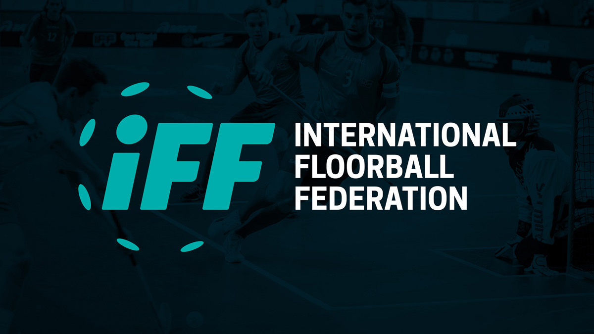
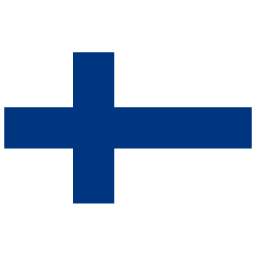
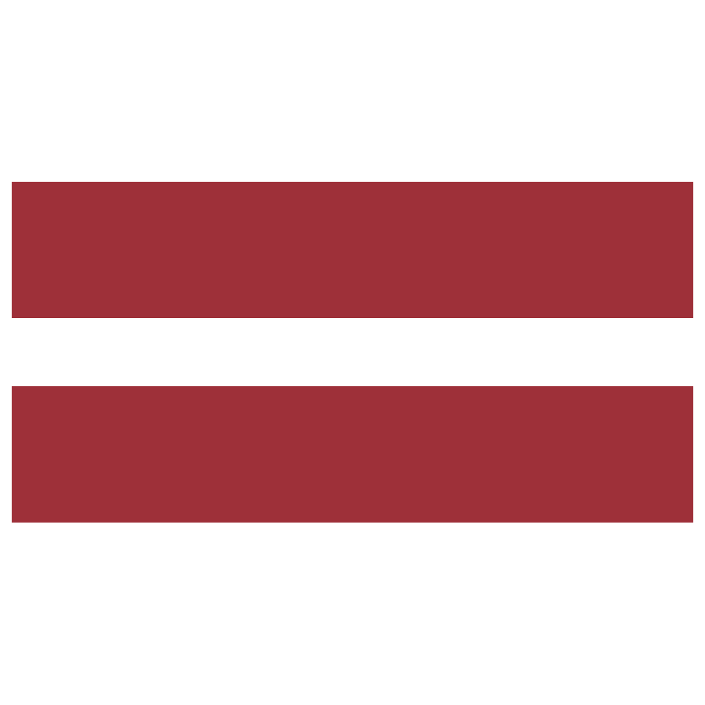

MS 2020
Mistrovství světa ve florbale mužů 2020 bylo 13. ročníkem mistrovství světa mužů. Turnaj se konal od 3. do 11. prosince 2021, ve Finsku ve městě Helsinky. Původně se mělo mistrovství konat v prosinci 2020, ale kvůli opatřením proti šíření nemoci covid-19 ve Finsku bylo odloženo o rok. Mistrovství bylo zároveň kvalifikací na Světové hry v roce 2022.
| Pořadí na posledním MS | ||
|---|---|---|
| 1. |

|
Švédsko |
| 2. |  | Finsko |
| 3. |

|
Česká Republika |
| 4. |

|
Švýcarsko |
| 5. |  | Lotyšsko |
| 6. |

|
Norsko |